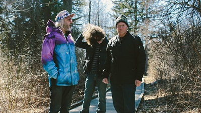
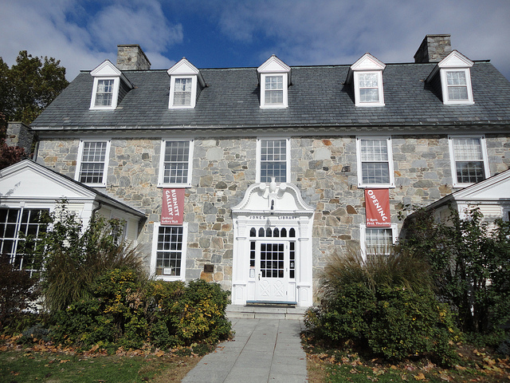

I grew up in Amherst, a college town in western Massachusetts. It is the home of Umass Amherst, Amherst College, and Hampshire College.
Hampshire College is famous for granting a student a degree in Frisbee!
A lot of college students are well-versed in the fine points of flinging a Frisbee, but John Dwork may be the first to earn a degree for the talent. Officials at Hampshire College say Dwork completed his course work last month and will get his bachelor's degree in January in "Flying Disc Entertainment and Education." "People are saying my degree represents the ideal," Dwork said in an interview last week. "It's almost as if I've made legitimate - I wouldn't say the California surfer image - (but) the whole new American alternative life-style." Instead of a traditional course load, students at the 1,100-student experimental college, where classes are optional, progress towards their degree by completing research projects and defending their work before a faculty committee. For his humanities requirement, Dwork presented a paper arguing that freestyle Frisbee, like dance, was art. For his science requirement he analyzed the physical and mental stresses of performing before a crowd. "Sure, we spent some time talking about it, and wondering is this basketweaving," said Dr. Stanley Warner, associate professor of economics and a member of faculty committees that reviewed Dwork's work. "But we decided it was not. He may have used Frisbee as a vehicle, but he actually ended up with a pretty good liberal arts education." There's little doubt about Dwork's familiarity with his subject. No slouch with a Frisbee, the 22-year-old from New York City won the world Frisbee Freestyle championship in 1978 and 1979. He has performed in the Rose Bowl and on television shows ranging from the Wide World of Sports to Sesame Street. It's taken him more than five years to get his degree. He took 1 1/2 years off to tour with the demonstration team he started called the "Washington Square Wizards." He's also done endorsements and marketing for sporting goods companies and set up and run disc festivals. All of his achievements have found their way into his academic projects. But, Dwork said, he didn't quite manage to turn a profit on his college education. "Not with what the tuition cost is here." he said. "But by working part-time I was able to earn enough to be decent." Warner said Dwork's focus was business management, "particularly entrepreneurship in the performing arts." "That's the constant theme he used as a frame of reference. Of course, for him, the performing arts meant Frisbee, but the committee was not going to let him get through here with a major in Frisbee," Warner said. On his way to a degree from the 13-year-old school, Dwork took a number of business courses at nearby University of Massachusetts, where he maintained a B average. His senior project included lecturing on unusual entrepreneurial techniques at the Whittemore School in Durham, N.H. His audiences were graduate business majors. "I'm a businessman, an entrepreneur, an organizer. I don't want to be a Frisbee player all my life. I was just able to get a lot of hands-on experience before I ever left college," Dwork said.
Amherst is the home of the awesome band Dinosaur Jr.!
Jones Library in downtown Amherst is a beautiful historic public library at which I spent many an hour in my youth.
